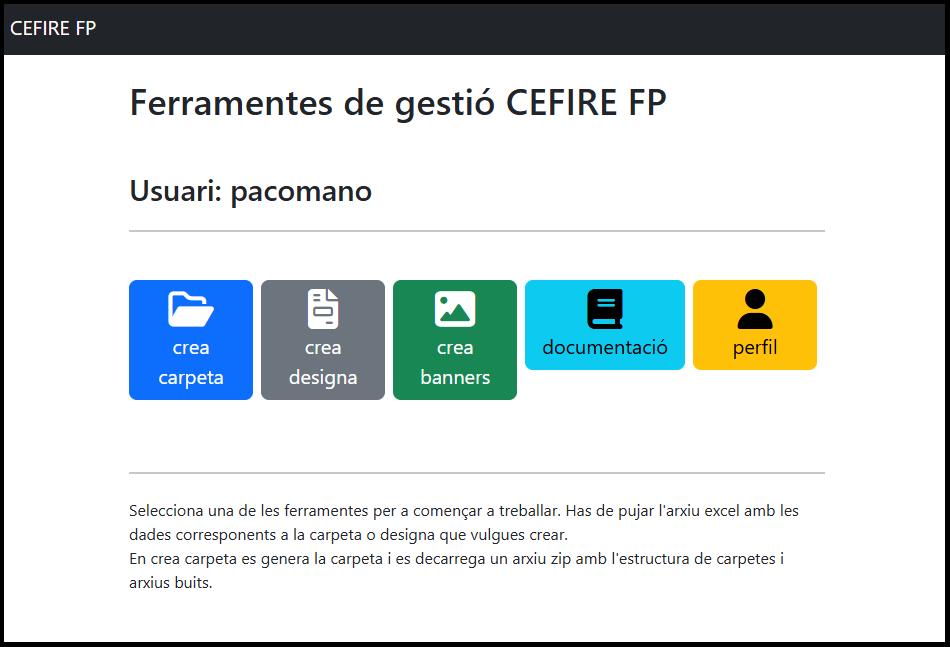
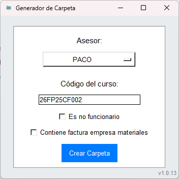
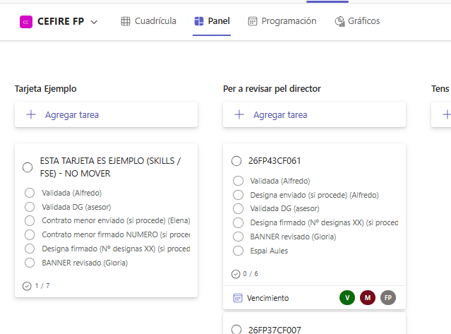

⚙️ Generar la formació
📘 Crear el curs en Gesform¶
Una vegada tinguen clara la formació i el que necessite caldrà introduïr-la a Gesform. Per a això, caldrà accedir a la plataforma Gesform i donar d'alta la formació. És important que seguisques els passos correctament i que omplis tots els camps necessaris.
⏰ Temporització recomanada de les fases d'un curs
- 📝 Fase d’inscripció → 4 setmanes.
- ✅ Fase de confirmació → 1 setmana.
- 📋 Llistat definitiu i inici del curs → 1 setmana abans de començar.
Una vegada donat de alta el curs en Gesform ens donarà un codi semblant a 2XFPxxCF0xx que l'haurem d'utilitzar per a identificar el curs.
El curs es quedarà en estat INICIAL, després d'omplir totes les dades del curs en Gesform y omplits tots el documents el poscanviarema a estat PROPOSTA.
📁 Crear la carpeta i documentació de la formació¶
Després d'haurà de crear la CARPETA DEL CURS, per a fer-ho utilitzarem l'aplicació de "Ferramentes de gestió CEFIRE FP".
Aplicació Ferramentes de gestió CEFIRE FP

L'ús és molt senzill, heu de polsart en "CREA CARPETA", i s'obrirá una finestra on heu de posar el vostre nom d'assessor i el codi de la formació, després polsar "Crear" i es crearà la carpeta amb totes les subcarpetes i documents necessàris.
⚠️ "IMPORTANT - NO ES POT CANVIAR EL NOM DEL LES CARPETES I DOCUMENTS QUE CREA L'APLICACIÓ"

L'aplicació crearà una carpeta amb el nom "CODI_FORMACIO_NOM_ASSESOR" que tindrà una una sèrie de subcarpetes i documents per a organitzar la documentació del curs. A continuació és resumeixen quines son les subcarpetes i els documments creats, per a saber per a que son:
- 2xFPxxCF0xx_FITXA ECONÒMICA.xlsx: És el document més importat, ja que tota la documentació del curs (designa, certifica, etc...) és genera a partir d'este document. En ell es detallen els costos i pressupostos. És imprescindible que REVISAR que esta fitxa estiga ben omplida i no tinga cap errada, les errades de esta fitxa NO ES PODEN CORREGIR.
- 2xFPxxCF0xx_DATOS PONENTE_NOMBRE.pdf: Es tracta d'un document on es detallen totes les dades del ponent.
- 2xFPxxCF0xx_AutorizacionUsoMaterialesAbierto:Autorització per a l'ús de materials oberts per part del ponent, que haurà de signar digitalment.
- 2xFPxxCF0xx_AutorizacionGrabacionYDifusion: Autorització per a la gravació i difusió de la formació, és un document que cal omplir i signar digitalment per part del ponent.
- 2xFPxxCF0xx_PROPER_PONENTE: És necessari que el ponent es done d'alta el compte on va a rebre el pagament del curs en la plataforma PROPER quan acabe la formació tal i com s'indica en Alta en Proper.
- 2xFPxxCF0xx_Informe motivado de necesidad de ponente NO FUNCIONARIO CAST: Quan una formació la impatisca personal NO GVA i el pagament vaja a fer-se per minuta (és a dir, que no hi haurà una factura del ponent, ja que este no té empresa o no pot facturar), és obligatori preparar un informe de necessitat, ja que aquest document justifica la contractació i és imprescindible per a tramitar el curs.
- 2xFPxxCF0xx_Modelo informe necesidad_VAL_V3.docx: Si per a impartir la formació s'ha contractat a un empresari individual (vulgarment conegut com a autònom) o a una societat empresarial (empresa), s'haurà de elaborar un Informe de necessitat per a fer el contracte menor. Aquest document ha de ser signat pel director del CEFIRE d'FP, i és necessari per a poder elaborar el contracte menor, el qual designa al empresaro individual o a l'empresa per a impartir la formació.
- 2xFPxxCF0xx-Tec: Subcarpeta on es posaran totes les evidències necessàries per a justificar la formació.
- 2xFPxxCF0xx_CuadroTexto: Es troba dins de la carpeta 2xFPxxCF0xx_CuadroTexto, i és un formulari que cal emplenar.
- 2xFPxxCF0xx_Evidencias: Es troba dins de la carpeta 2xFPxxCF0xx_CuadroTexto, i és un document on es posaran captures de totes les evidències necessàries per a justificar la formació. Baners, publicació en web, fotos, etc... .
- 2xFPxxCF0xx_FSE_Ficha_seguimiento: Es troba dins de la carpeta 2xFPxxCF0xx_CuadroTexto, i és s'inidcarna els continguts del curs, etc.
- 2xFPxxCF0xx_crea_designa.exe: És una aplicació que crearà el designa del ponent.
⚠️ "IMPORTANT - NO ES POT CANVIAR EL NOM DEL LES CARPETES I DOCUMENTS QUE CREA L'APLICACIÓ"
La carpeta creada la guardarem dins de la carpeta de cursos:
Carpeta de Cursos
📑 Fitxa Econòmica¶
Document 2xFPxxCF0xx_FITXA ECONÒMICA.xlsx
La fitxa econòmica és un document OBLIGATORI que s’ha d’elaborar en TOTS ELS CASOS quan es crea una acció formativa. És l’eina que assegura la coherència entre la planificació pedagògica i la gestió econòmica del curs, ja que de la seua correcta elaboració dependrà tota la documentació posterior (contractes, justificacions, informes, etc.).
Per això és fonamental que estiga omplida amb rigor i SENSE ERRORS, ja que qualsevol incongruència pot generar retards o problemes en el procés de validació i pagament.
Aspectes clau que cal tindre en compte
- La fitxa econòmica ha d’estar correctament omplida en totes les seues parts.
- El títol de la formació ha de possar-se en valencià. (Açò es degut a que a partir de la fitxa econòmica es crea el DESIGNA, el qual està redactat en valencià).
- El format de les dates de la formació ha de seguir el patró "del DD/MM/AA al DD/MM/AA".
- En cada linea del document, s'ha de possar totes les dades del ponent o de la empresa. Per example, si un ponent a banda de pagar-li per la tutorització se li paga per creació de materials, s'haurà d'omplir dos lines amb totes les dades del ponent.
- Tota la documentació administrativa (contractes, informes, propostes, justificacions…) es genera a partir d’aquesta fitxa, per tant és el document base.
- El pressupost indicat ha de coincidir exactament amb el que s’ha introduït en GESFORM.
- Han d’estar inclosos tots els noms dels ponents, sense faltes d’ortografia i amb el format establit en GESFORM (majúscules).
- Cal comprovar que hi consten totes les dades requerides: hores de docència, tarificació, preu per hora, i el preu total de la formació.
- La fitxa econòmica ha d’estar signada tant per l’assessor/a responsable com pel director/a del CEFIRE.
- El document s’ha de lliurar en dos formats:
- Excel (editable).
- PDF signat digitalment per l'assessor (versió oficial).
🧑💼 Designa¶
Document 2xFPxxCF0xx_DESIGNA_Nombre_Apellido1_Apellido2.xlsx
El “DESIGNA” és un document administratiu que serveix per a formalitzar la designació d’un ponent o formador per a una activitat formativa concreta, com ara una formació FSE o SKILLS dins del CEFIRE. És una manera oficial de deixar constància que una persona concreta ha estat seleccionada per impartir la formació i que la seva participació està autoritzada i validada per la direcció.
El DESIGNA es fa en tots els casos menys quan es tracta d'un empresari individual (autònom) o d'una empresa que ens ha de facturar la formació, en este cas es fa un contracte menor, i per tant, no cal DESIGNA.
El document “DESIGNA” es genera amb l'aplicació de "Ferramentes de gestió CEFIRE FP".
Aplicació Ferramentes de gestió CEFIRE FP
En l'apliació, polsarem "CREA DESIGNA" i ens demanarà que pugem el document FITXA ECONÒMICA del curs, una vegada pujat polsarem "Genera DESIGNA".
Un vegada creat caldrà revisar-lo per a comprovar que s'ha creat correctament.
DESGINA <> FITXA ECONÒMICA
EL DESIGNA es genera a partir de la FITXA ECONÒMICA, per tant, és molt important que la FITXA ECONÒMICA estiga ben omplida.
Este document ha de ser signat per el/la director(a) de la Direcció General de Formació Professional. Per tant, una vegada generat es possarà una còpia en la carpeta DESIGNA POR FIRMAR.
Posteriorment, abans de que comence la formació (aproximadament uns 3-5 dies abans), l'assessor haurà de comprovar que el DESIGNA estiga signat en la carpeta de designes firmats.
Comprovar que el DESIGNA estiga signat abans de começar la formació
Si el DESIGNA no està signat NO es pot començar la formació, i caldria possar-se en contacte amb el Director del CEFIRE d'FP per a vore qué ha pasat i canviar les dates
Una vegada ho comprovem haurem d'anar al KANBAN i anotar-ho el la tasca marcant el check de l'element designa dela tarjeta de la formació. Vore apartat Tarjeta KANBAN
👤 Informe de necessitats de contractació de personal no GVA¶
Document 2xFPxxCF0xx_Informe motivado de necesidad de ponente NO FUNCIONARIO CAST
Quan una formació la impatisca personal NO GVA i el pagament vaja a fer-se per minuta (és a dir, que no hi haurà una factura del ponent, ja que este no té empresa o no pot facturar), és obligatori preparar un informe de necessitat, ja que aquest document justifica la contractació i és imprescindible per a tramitar el curs.
🏢 Informe de necessitats de contractació d'una empresa¶
Document 2xFPxxCF0xx_Modelo informe necesidad_VAL_V3.docx
Si per a impartir la formació s'ha contractat a un empresari individual (vulgarment conegut com a autònom) o a una societat empresarial (empresa), s'haurà de elaborar un Informe de necessitat per a fer el contracte menor. Aquest document ha de ser signat pel director del CEFIRE d'FP, i és necessari per a poder elaborar el contracte menor, el qual designa al empresaro individual o a l'empresa per a impartir la formació.
En este cas farà falta un contracte menor, del qual s'encarregarà Elena i ens avisarà a través de la Tarjeta KANBAN del curs. Alli possarà el número de contracte menor que haurem de facilitar a l'empresa. Fins que no estiga el contracte menor no es pot començar la formació.
Contracte menor
Fins que no estiga el contracte menor NO es pot començar la formació.
🎨 Banner¶
En el cas de les formacions online, és obligatori preparar un banner identificatiu que s’utilitzarà tant en AULES com en la difusió del curs.
Per a crear el banner és OBLIGATORI utilitzar l'aplicació de "Ferramentes de gestió CEFIRE FP".
Aplicació Ferramentes de gestió CEFIRE FP
Este banner ha d’incloure de manera clara i visible la informació següent:

- Titol de la formació.
- Dates de la formació. amb el format del DD/MM al DD/MM, no cal incloure l'any perque aquest ja apareix indicat al banner.
- Tipus de formació (Online/Presencial, Amb sessions síncrones).
- Lloc de la formació, sol si es presencial, si es online cal deixar-ho en blanc.
- Durada total de la formació (hores).
- Logos institucionals que corresponguen.
És molt important que el banner complisca aquests requisits, ja que és la imatge oficial de la formació i garanteix la correcta visibilitat dels programes i institucions que la recolzen.
Una vegada creat el banner el descarregarem i el nombrarem seguint el patró:
2xFPxxCF0xx_NomCurtFormacio_NomAsessor_baner_castella.png
2xFPxxCF0xx_NomCurtFormacio_NomAsessor_baner_valencia.png
2xFPxxCF0xx_NomCurtFormacio_NomAsessor_instagram_castella.png
2xFPxxCF0xx_NomCurtFormacio_NomAsessor_Instagram_valencia.png
Exemple.-
26FP25CF008_Color_Paco_baner_castella.png
26FP25CF008_Color_Paco_baner_valencia.png
26FP25CF008_Color_Paco_instagram_castella.png
26FP25CF008_Color_Paco_Instagram_valencia.png
Quan els tingam descarregats i correctament nombrats el guardarem el la carpeta del curs, i pujarem una copia a la carpeta "Carpeta Banners" per a que siguen revisats i validats per Gloria:
Carpeta de banners
El banner serà revisat i validat per Gloria, en el cas de que siga correcte, Gloria afegirà al nom del banner com a sufixe "_OK". Si el banner crear té algun error s'informarà a través de KANBAN (Vore apartat Tarjeta KANBAN) i es s'afegirà al nom del banner com a sufixe "_MODIFICAR". Una vegada subsanat l'errada és renombrarà a "_CORREGIT" i s'avisarà a Gloria.
Publicació de banners y difusió del curs
La publicació de banners y difusió del curs, es realitzará una vegada el curs estiga validat per la DG, el procediment està explicat en la següent fase Preparar la formació, en el apartat Difusió curs.
🏫 Sol·licitut d'espais del centre¶
Si la formació es presencial en algún centre, s'haurà de demanar permís al centre en qüestió. Es per allo que haurem d'amplir el següent document i l'il tenim que enviar al director del centre per a que ens el signe. El document el guardarem en la carpeta del curs amb en nom 2xFPxxCF0xx_Solicitud de Espacios.PDF.
🟨 Tarjeta KANBAN¶
Una vegada tinguem la formació introduida en Gesfrom i omplit tota la documentació esmentada abans, avisarem a través de KANBAN per a que ens validen la formació.
Per a avisar haurem de generar una nova tarjeta (copiant la tarjeta d'exemple) amb el codi de la formació, i la posarem en la columnna "Per a Revisar per director".
La tarjeta és dinàmica i tindrem que anar revisant-la i treballant sobre ella, per tant, cal tindre en compte els següents aspectes:
- La tarjeta ens l'assignarem a nosaltres i a Gloria i a Alfredo, per cal d'estar informats en cada canvi d'estat.
- Si en la formació intervé una empresa i per tant hem tingut que fer un "informe de necessitats de contractació d'una empresa", també haurem d'etiquetar a Elena. En este cas, Elena possarà el número de contracte menor (el qual haurem de facilitar a l'empresa) dins de la tarjeta Kanban. Recorda que la formació no es pot començar si no està el contracte menor.
- Revisarem en Gesform quan la DG ens valide la formació, en eixe moment, clickarem en "Validada (DG).
- Quan tinga'm el designa signat (recordar que s'ha de revisar 3-5 dies abans del començament de la formació, i si no està signat no es pot començar la formació), clicarem en "Designa firmado".
- Una vegada validat el banner, clicarà "Banner revisado".
Tal i com s'ha comentat abans, la tarjeta és dinàmica i anirà movent-se entre les columnes, a continuació s'explica cada columna i el fluxe que pot tindre la tarjeta:
- Per a revisar pel director.- Açí col·locarem la tarjeta quan tinga'm la formació introduida en Gesfrom i omplida tota la documentació.
- Tens que arreglar alguna cosa.- El director col·locarà la tarjeta en esta columna quan tinguem que revisar alguna cosa. Dins de la tarjeta en comentaris ens indicarà qué és lo que hem de corregir. Una vegada corregit, mourem la tarjeta a la columna "Per a revisar pel director".
- Revisant.- Indica que el director està revisant al formació. En este cas NO podem modificar res de la tarjeta, ni de la formació.
- Preparada per a començar.- Indica que tota la documentació de la formació està correcta i validad per el director, i per tant, pot començar.
- Certificar.- Una vegada haja acabat la formació i tenim tota la documentació de finalització preparada, moure'm la tarjeta a aquesta columna.
